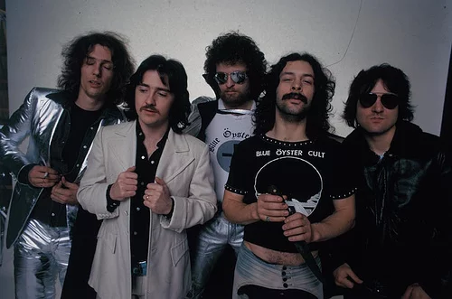

Blue Öyster Cult
Blue Öyster Cult is a rock band formed in New York in the late 1960s and pioneered music genres like heavy metal. With over 7 million albums sold around the world, 14 studio albums and 8 live albums released, there are plenty of tracks to listen to! The original and most successful lineup includes Eric Bloom, Donald "Buck Dharma" Roeser, Allen Lanier, Albert Bouchard, and Joe Bouchard. While many of their songs are written by the band members themselves, Blue Öyster Cult is known for having many outside writers. One example is Patti Smith, the ex-boyfriend of Allen Lanier. Blue Öyster Cult released their first album in 1972 but it was not until 1976 with their platinum hit (Don't Fear) The Reaper that they found global success. The story of Blue Öyster Cult is quite interesting, this site is a fan site dedicated to the history and lore of this band.
